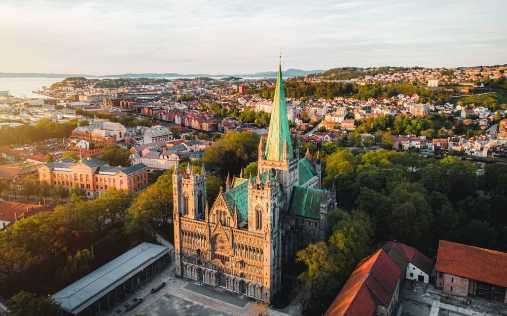

Descoperă Trondheim - Orașul istoric și cultural din inima Norvegiei
Trondheim este un oraș plin de farmec și istorie, situat în inima Norvegiei, ce oferă atracții culturale și arhitecturale unice:
-

Catedrala Nidaros
Această catedrală gotică este cea mai mare din Norvegia și un important loc de pelerinaj.
-

Orașul vechi
Centrul istoric al orașului este plin de clădiri colorate și străduțe înguste, oferind o atmosferă unică.
-

Arhitectură eclectică
De la case medievale la clădiri moderne, Trondheim surprinde cu diversitatea sa arhitecturală.
-

Peisaje pitorești
Orașul este situat pe malul fiordului Trondheim, oferind priveliști impresionante asupra apei și munților din împrejurimi.
-

Muzee interesante
Trondheim găzduiește o serie de muzee captivante, precum Muzeul de Artă și Muzeul Trondheim.
Concluzii
Trondheim este un oraș plin de caracter și oferă o combinație între istorie, cultură și peisaje naturale impresionante.